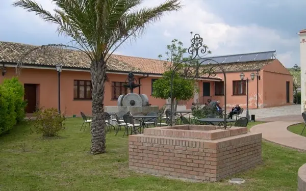
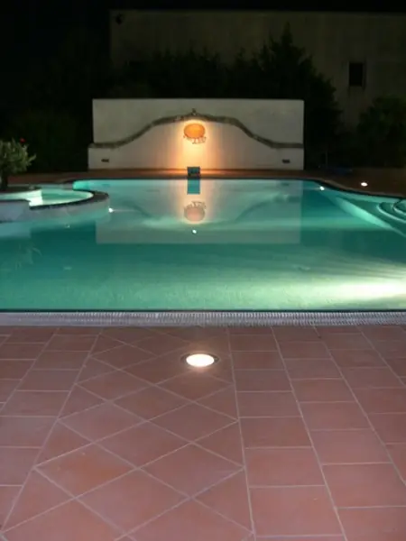
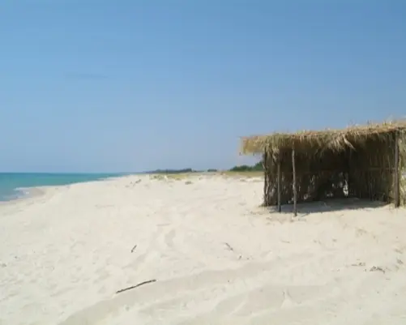
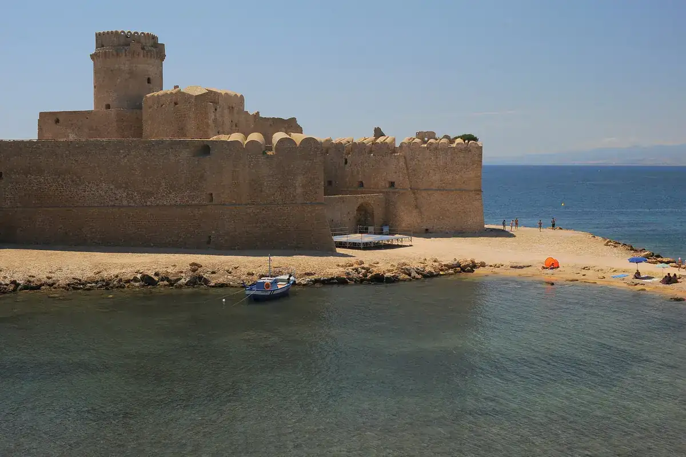
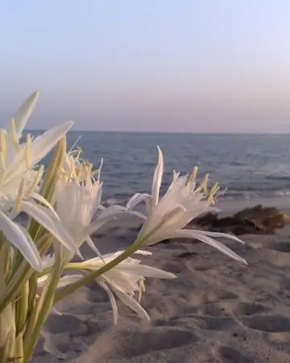
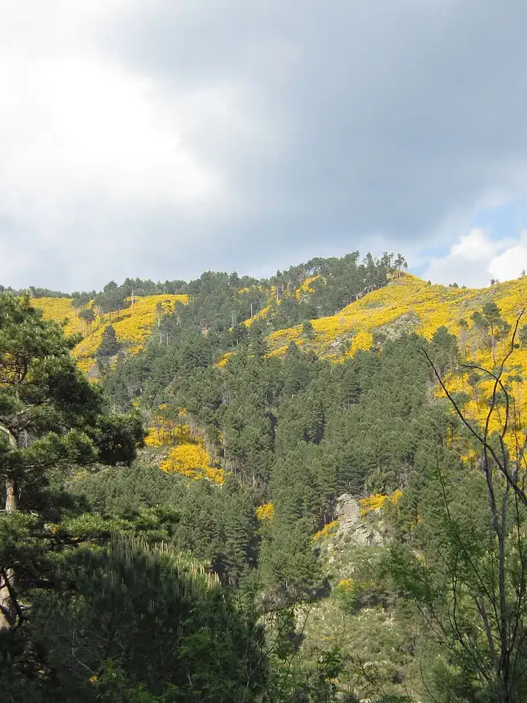
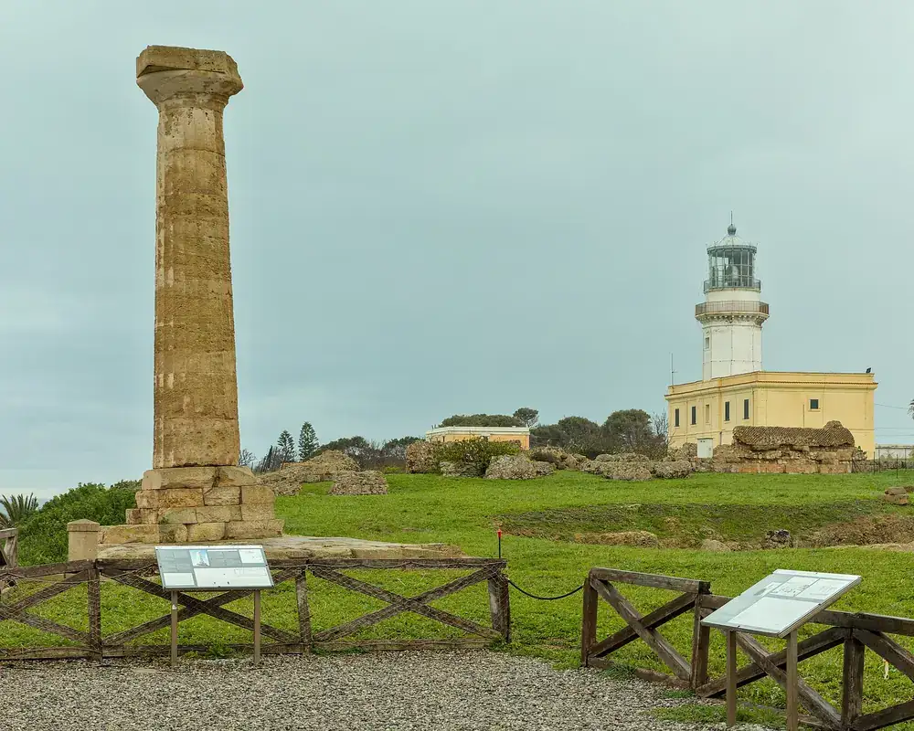
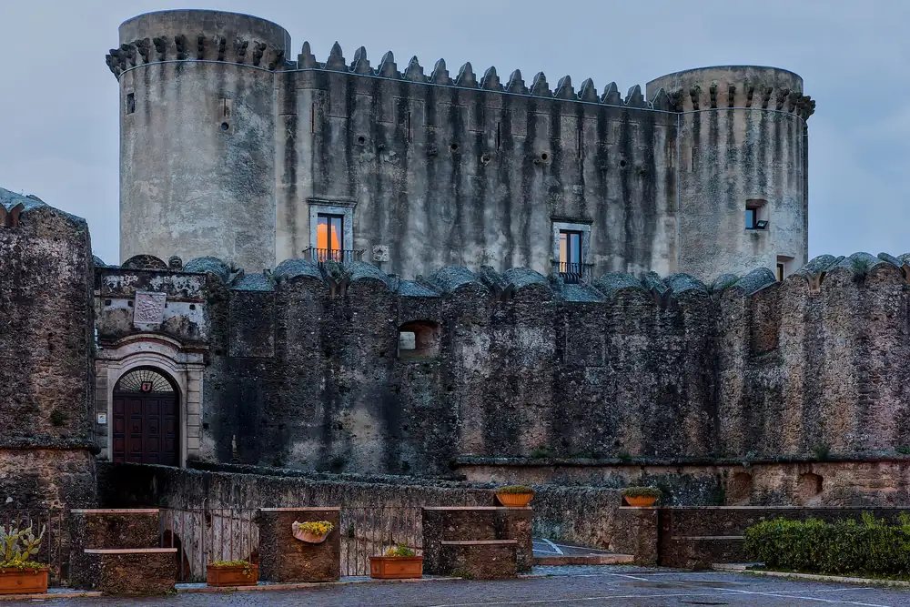
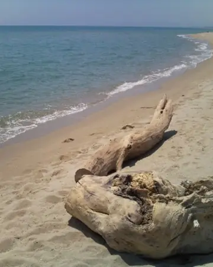
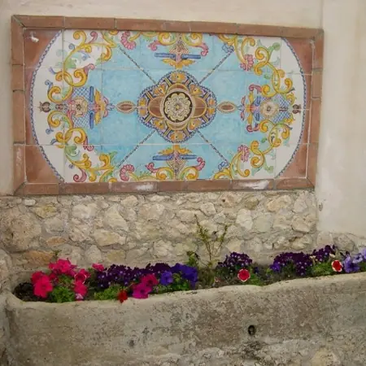

Il borgo di Botro
L'antica casa padronale, i casali dei contadini e i magazzini, restaurati senza perdere il pozzo al centro dell'aia. Intorno, fiori, ulivi e silenzio.

La Casa di Botro privilegia la quiete: un posto per riposare, lontano dai flussi turistici più intensi, a pochi minuti dal mare. L'ospitalità è quella della famiglia Colucci.
- Spiaggia privata
- 4 km
- Sila piccola
- 20 minuti
- Aeroporto di Crotone
- 30 km
- Lamezia Terme
- 70 km
Camere e appartamenti
Nove camere e quattro appartamenti, tutti con bagno, aria climatizzata e TV satellitare. Colazione inclusa nelle camere.
Tutte le tariffeSei camere al primo piano della casa padronale, con mobili di pregio; tre nella corte, con arredi funzionali.
Negli appartamenti: cucina attrezzata e soggiorno, a settimana.


A tavola con quello che coltiviamo
Cucina calabrese e mediterranea con i prodotti dell'azienda, nelle sale interne o all'aperto con il barbecue. Piatti di carne e di pesce, e ricette regionali ormai introvabili.
250 ettari, mese per mese
Seminativi, pascoli, boschi, uliveti e frutteti, coltivati dai titolari con metodi biologici e integrati. Quello che cresce qui finisce a tavola e in dispensa. Scegli un mese:
Nei campi
- ott–dic
- giu–lug
- giu
- lug–ago
- mar–mag
- tutto l'anno
Le colture di sempre, ulivi e cereali, e quelle aggiunte negli anni.
Nella stalla
Carne sempre fresca, allevata sul posto.
In dispensa
In vendita anche a distanza: si ordina per telefono o email, con spedizione.
Dal mare alla Sila in venti minuti
La spiaggia privata è a 4 km, attraverso i campi: sabbia, fondale che digrada piano, ombrelloni, lettini e teli per gli ospiti, e la vecchia “frischera” di frasche per l'ombra.
La piscina di 14 per 7 metri, con idromassaggio e geyser, è nel verde accanto al TV-bar, aperta da maggio a settembre e riservata a chi soggiorna.








Come prenotare
Una camera, un appartamento, il pranzo della domenica o un matrimonio: chiamaci o scrivici.

Preferisci telefono o WhatsApp?
- 0961 966592Reception
- 327 4677776WhatsApp, banchetti
- 338 3481376Prenotazioni, Luigi Colucci
- info@botro.itTi mandiamo un'offerta su misura
In auto e in treno
Dalla A2 uscita Lamezia Terme verso Catanzaro e Crotone, poi la statale 106 fino a Botricello: dopo il municipio a destra, seguendo le indicazioni. La stazione di Botricello è servita dai treni regionali.
In aereo
Aeroporto di Crotone a 30 km, Lamezia Terme a 70 km. Su richiesta organizziamo il trasferimento con un vettore convenzionato.